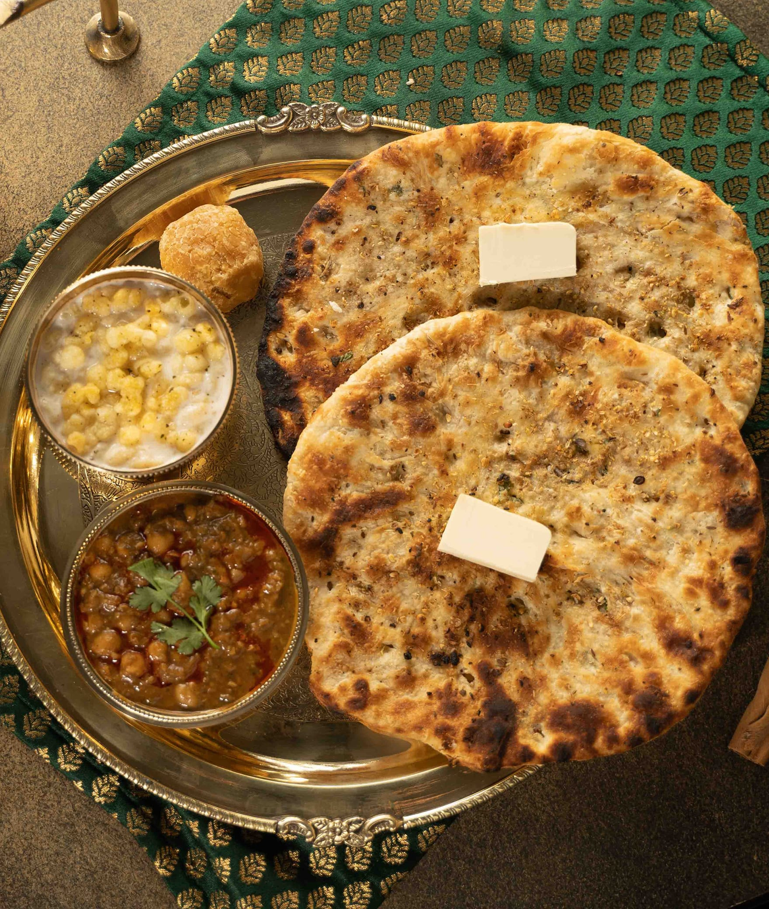

AmritsariKulcha is a popular Punjabi flatbread made with all purpose flour and stuffed with a spicy potato filling. It is a popular street food in Punjab and is served with butter and pickle.

Ingredients
To Prepare Dough:
2 cupsMaida
1 Tspsugar
1 TspBaking Powder
1/4 TspBaking Soda
to TasteSalt
1/4 CupCurd
2 TspOil
To kneadLuke Warm Water
For Potato stuffing:
2Large Potato(Boiled and Peeled)
1Green Chilli(Finely Chopped)
1/2 TspKashmiri Red chilli Powder
1/4 TspGaram Masala
1 inchGinger
1/4 TspAamchur Powder
1/4 TspAjwain/Carrom Seeds
1 TbspCorianders Leaves(Finely Chopped)
To TasteSalt
Other Ingredients:
2 TspBlack Sesame Seeds/til
3 TbspCoriander Leaves(Finely Chopped)
2 tbspButter
Preparation
Combine all the ingredients in a bowl and mix well to make a batter of dropping consistency using approx. 1 cup of water.
Heat a non-stick tava (griddle) and grease it with little oil.
Pour a ladleful of the batter on it and spread into a circular motion to make a 100 mm. 4 diameter circle.
Cook on both sides, using little oil, till it turns golden brown in colour from both the sides.
Repeat steps 2 to 4 to make 9 more pancakes. Serve immediately with green chutney.